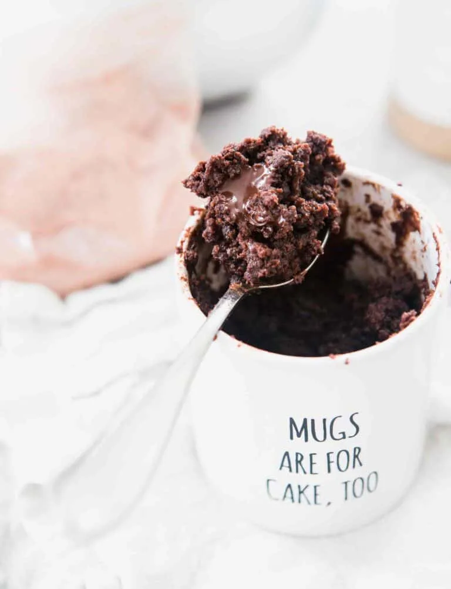

Moistest Chocolate Mug Cake from Table for Two

Great for a quick chocolatey treat!
This recipe is a personal staple. Often after a hard day I want to satisfy a chocolate craving. This rich treat fits the bill perfectly!
From: Table for Two
Ingredients
- 1/4 cup all-purpose flour
- 2 tbsp unsweetened cocoa powder
- 2 tbsp granulated sugar
- 1/4 tsp baking powder
- 1/8 tsp salt
- 1/4 cup milk
- 2 tbsp vegetable oil
- optional: 1 tbsp chocolate spread or chocolate chips
Directions
- Add dry ingredients, flour through salt, to your favourite mug
- Mix thoroughly
- Add milk and oil
- Mix until smooth
- Top with chocolate spread or chocolate chips as desired
- Cook in microwave oven about 80 seconds (timing depends on your microwave. look for a matte finish on the cake surface)
- Enjoy!